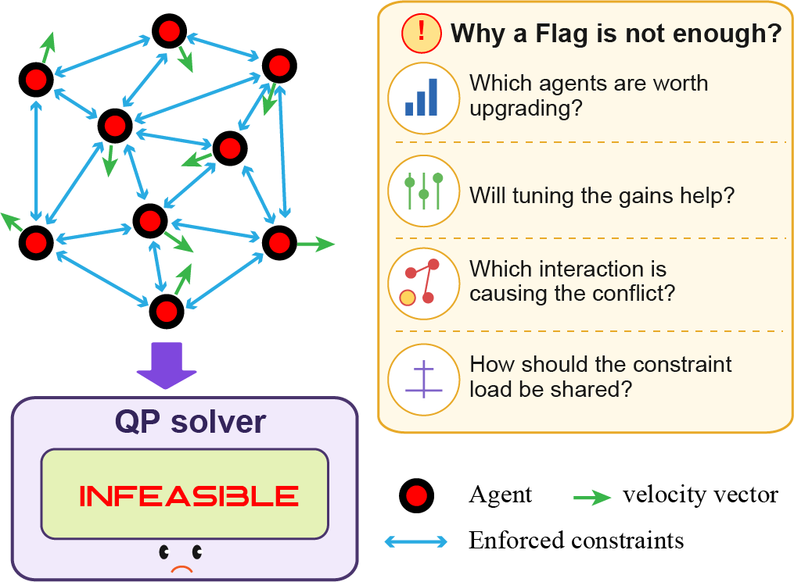
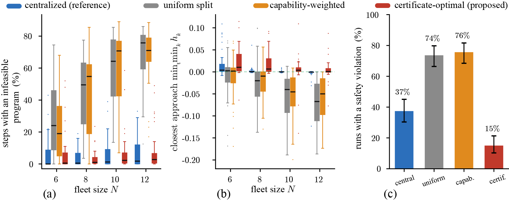
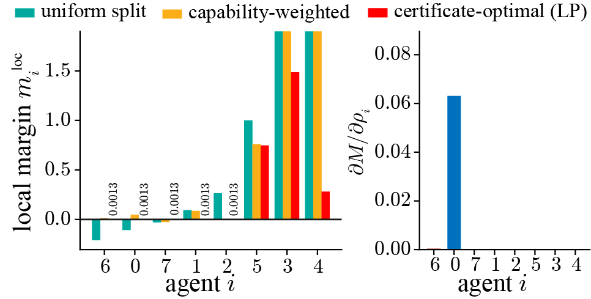
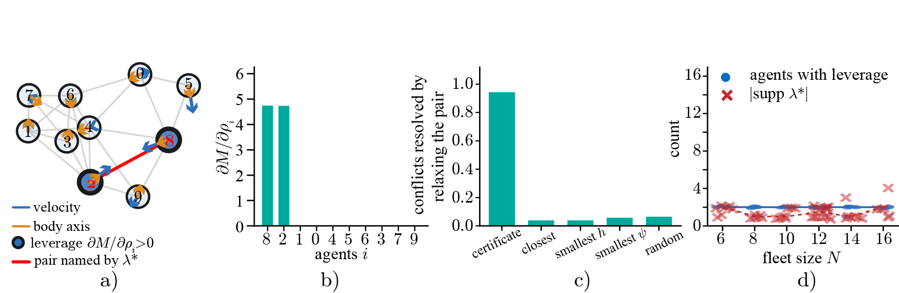

The same task, three ways
Same start, same goals, same actuation. The two heuristics stall, with 45% and 32% of steps infeasible. Ours: 0.3%.
Exact diagnosis of infeasibility in multirobot control barrier functions
Sixteen robots. Every edge is a shared safety constraint, coloured by who is responsible for it. One linear program chooses the division at every step.
A multirobot safety filter returns one bit when it fails. What should the designer actually change?

When barrier constraints compete for bounded actuation, the solver returns one word: INFEASIBLE.
It never says which interaction caused it, which robot is worth upgrading, or how the load should have been split.
We derive an exact conic certificate that answers all four questions from a single solve.
Class K functions move demand only. Retuning cannot create capability.
For most robots the value of extra actuation is exactly zero. A tenfold upgrade changes nothing.
It names a handful of pairs at any fleet size, and is right 94% of the time.
Solved centrally, then broadcast so each robot filters its own input in parallel.
320 paired runs. Identical fleets, tasks and actuation. Only the division differs.
We compare four ways of enforcing the same constraints. A centralized filter solves one joint program over every input and serves as the reference. The other three are fully decentralized: each robot solves for its own input alone, enforcing only the share of each constraint it is given. They differ only in how that share is chosen.

(a) Fraction of control steps at which some robot has no admissible input. The two heuristics degrade steadily as the fleet grows, passing 60% by twelve robots, while ours stays flat near the centralized reference. (b) Closest approach over each run. Ours is the only decentralized method whose median stays above zero at every fleet size. (c) Fraction of runs containing a violation, pooled.
| Allocation | Infeasible steps | Unsafe runs | Closest approach |
|---|---|---|---|
| Centralized (reference) | 5.4% | 59/160 | +0.001 |
| Uniform split | 50.8% | 118/160 | −0.044 |
| Capability weighted | 49.6% | 123/160 | −0.038 |
| Ours | 6.0% | 23/160 | +0.017 |
Pooled over heterogeneous fleets of six to twelve robots. Splitting a constraint badly costs roughly 45 percentage points of feasibility against a centralized filter. Choosing the split by the certificate recovers essentially all of it, and is the only decentralized method that also improves safety.
Same start, same goals, same actuation. The two heuristics stall, with 45% and 32% of steps infeasible. Ours: 0.3%.

Left: the local margins move. Three robots are stuck under the uniform split, none under ours. Right: the leverage is identical under all three allocations. The division changes neither the capability nor who holds it, only whether the local programs can use it.

In a ten robot conflict with 24 enforced pairs, the certificate blames a single pair, and only its two endpoints carry any leverage. Relaxing that pair restores feasibility in 94% of 52 conflicts, against 4 to 6% for the usual heuristics.
Drag the robots, their velocities and their body axes. Everything is solved live in your browser. Switch the allocation and watch stuck robots come free.
We target feasibility, not liveness. A heuristic split that leaves a program infeasible lets the robot relax its own share and move anyway. It makes progress, and violates the safety distance five times as often. Enforcing a constraint is more restrictive than enforcing it only when convenient, so we reach fewer goals. Deadlock needs machinery beyond the certificate.
Pointwise infeasibility of multirobot control barrier function safety filters offers little guidance on its cause. We derive an exact conic certificate whose sign decides feasibility and whose value separates the problem into a demand term, set by the barrier encoding, and a supply term, set by the geometry of the input sets. The supply is invariant to the class K functions, so retuning gains cannot create capability. Structurally degenerate states exist at which no increase in actuation restores feasibility. The multiplier is sparse, naming the few interactions and agents responsible. Because the certificate prices any division of a shared constraint exactly, the optimal division solves a single linear program, computed centrally and executed locally. Across 320 paired runs it reduces infeasible steps from about 50% to 6.0%, matching a centralized filter, and cuts runs containing a safety violation from 118 of 160 to 23 of 160, at 2.3 ms per step.
@inproceedings{sah2027certificate,
title = {When the Safety Filter Fails: Exact Diagnosis of Infeasibility
in Multirobot Control Barrier Functions},
author = {Sah, Chandan Kumar and Keshavan, Jishnu},
booktitle = {IEEE International Conference on Robotics and Automation (ICRA)},
year = {2027}
}